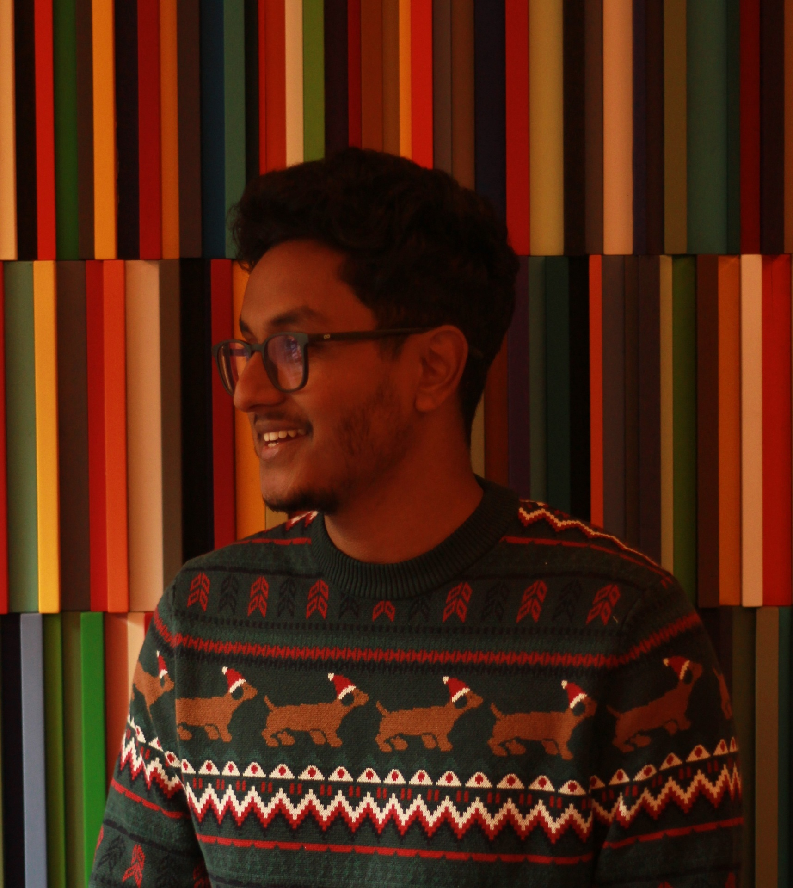
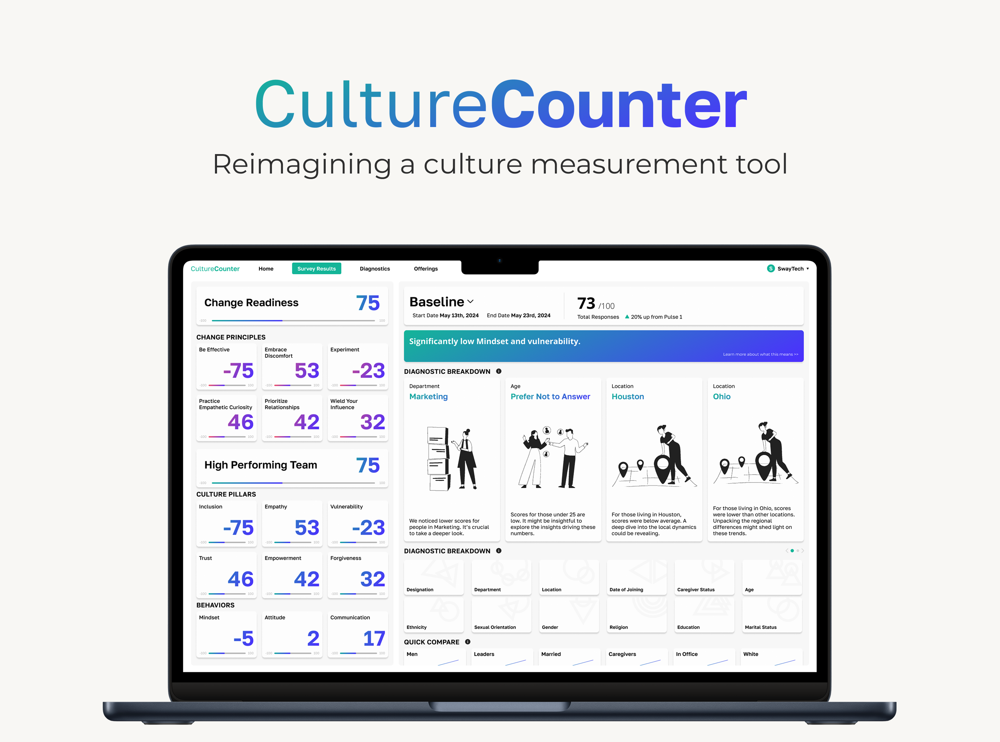
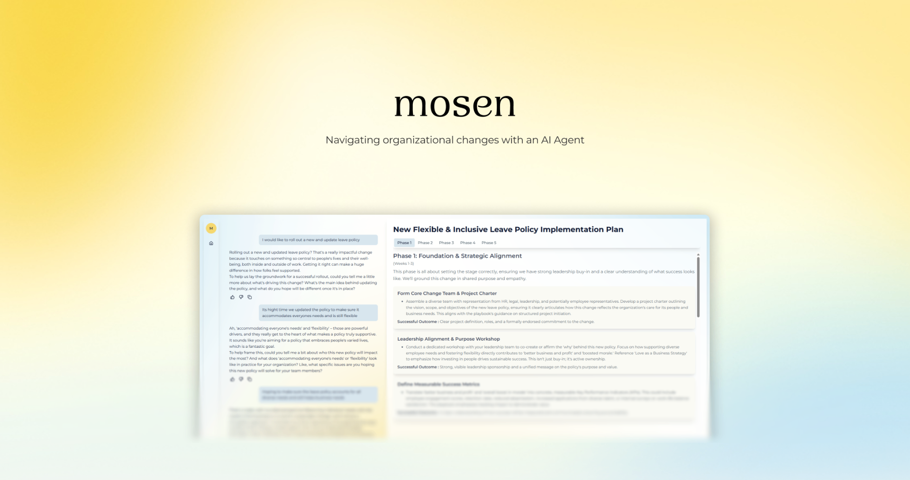
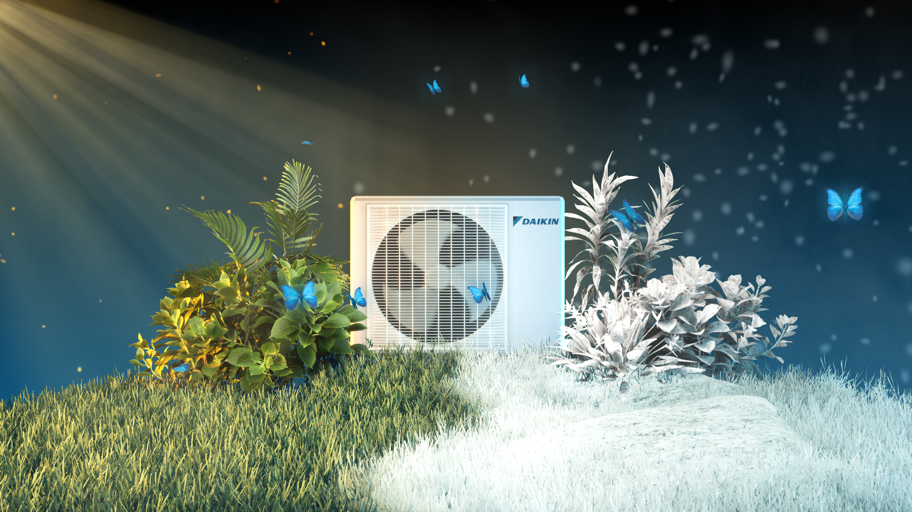
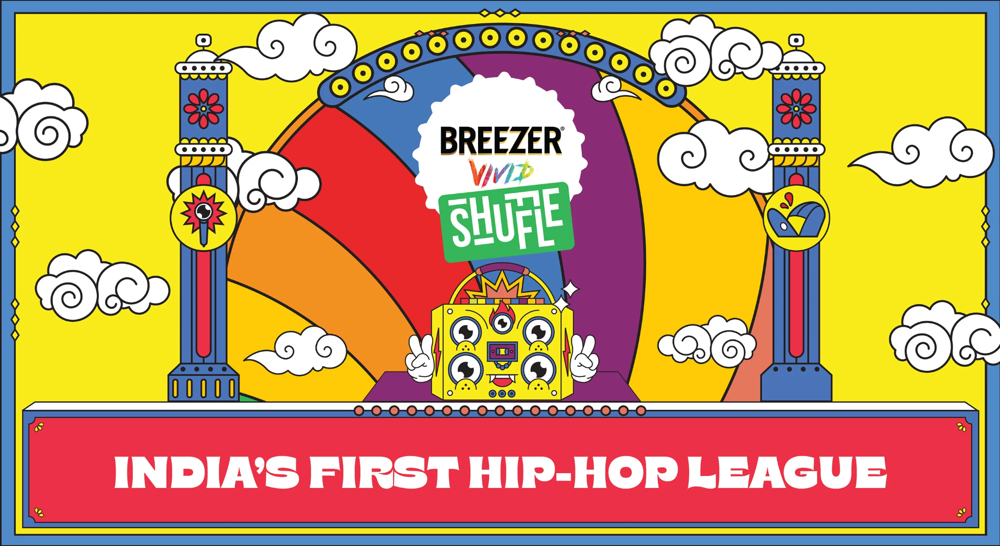
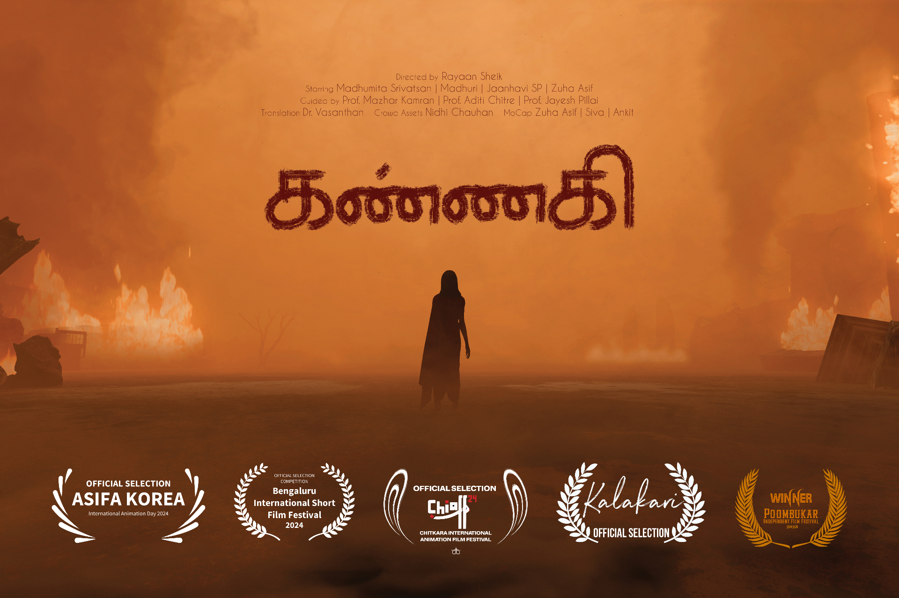
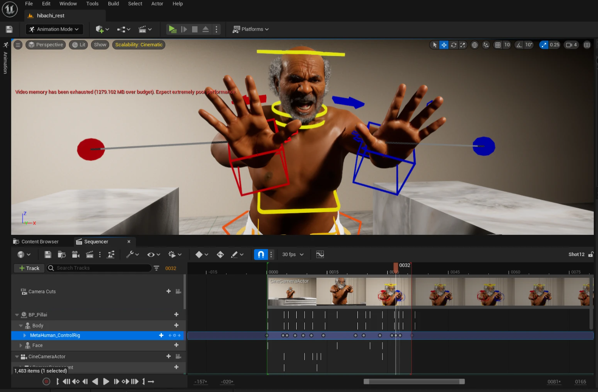

Product Designer, 4+ Years
Rayaan
Sheik
I work across 3D animation, motion graphics, immersive media and user experience, crafting intuitive, human-centered work for web and mobile.
I bring storytelling and movement into everything I make, so digital experiences feel engaging and alive.

Selected Work
06 ProjectsUI / UX Design
Culture Counter
A complete redesign of a workplace culture measurement tool.

Mosen
Organizational change management with AI agents, built with an AI-enhanced product process.

Animation
Daikin HVAC
3D animated advertisements promoting a new line of HVAC systems.

Breezer Vivid Shuffle
Motion graphic creatives for a music festival campaign.

Kannagi
An animated short film based on the Tamil epic, Silappadhikaaram.

Hibachi
An experimental animated short using motion capture technology.
